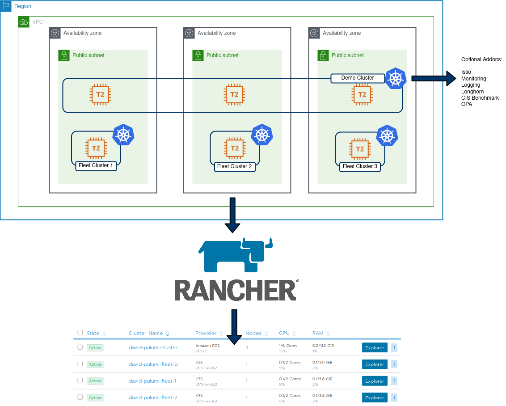

Creating Kubernetes Clusters with Rancher and Pulumi
tldr; Here is the code repo
Intro
My Job at Suse (via Rancher) involves hosting a lot of demos, product walk-throughs and various other activities that necessitate spinning up tailored environments on-demand. To facilitate this, I previously leaned towards Terraform, and have since curated a list of individual scripts I have to manage on an individual basis as they address a specific use case.
This approach reached a point where it became difficult to manage. Ideally, I wanted an IaC environment that catered for:
- Easy, in-code looping (ie
forandrange) - “Proper” condition handling, ie if monitoring == true, install monitoring vs the slightly awkward HCL equivalent of repurposing
countas a sudo-replacement for condition handling. - Influence what’s installed by config options/vars.
- Complete end-to end creation of cluster objects, in my example, create:
- AWS EC2 VPC
- AWS Subnets
- AWS AZ’s
- AWS IGW
- AWS Security Group
- 1x Rancher provisioned EC2 cluster
- 3x single node K3S clusters used for Fleet

Architectural Overview
Pulumi addresses these requirements pretty comprehensively. Additionally, I can re-use existing logic from my Terraform code as the Rancher2 Pulumi provider is based on the Terraform implementation, but I can leverage Go tools/features to build my environment.
Code Tour - Core
The core objects are created directly, using types from the Pulumi packages:
VPC:
// Create AWS VPC
vpc, err := ec2.NewVpc(ctx, "david-pulumi-vpc", &ec2.VpcArgs{
CidrBlock: pulumi.String("10.0.0.0/16"),
Tags: pulumi.StringMap{"Name": pulumi.String("david-pulumi-vpc")},
EnableDnsHostnames: pulumi.Bool(true),
EnableDnsSupport: pulumi.Bool(true),
})
You will notice some interesting types in the above - such as pulumi.Bool and pulumi.String. The reason for this is, we need to treat cloud deployments as asynchronous operations. Some values we will know at runtime (expose port 80), some will only be known at runtime (the ID of a VPC, as below). These Pulumi types are a facilitator of this asynchronous paradigm.
IGW
// Create IGW
igw, err := ec2.NewInternetGateway(ctx, "david-pulumi-gw", &ec2.InternetGatewayArgs{
VpcId: vpc.ID(),
})
Moving to something slightly more complex, such as looping around regions and assigning a subnet to each:
// Get the list of AZ's for the defined region
azState := "available"
zoneList, err := aws.GetAvailabilityZones(ctx, &aws.GetAvailabilityZonesArgs{
State: &azState,
})
if err != nil {
return err
}
//How many AZ's to spread nodes across. Default to 3.
zoneNumber := 3
zones := []string{"a", "b", "c"}
var subnets []*ec2.Subnet
// Iterate through the AZ's for the VPC and create a subnet in each
for i := 0; i < zoneNumber; i++ {
subnet, err := ec2.NewSubnet(ctx, "david-pulumi-subnet-"+strconv.Itoa(i), &ec2.SubnetArgs{
AvailabilityZone: pulumi.String(zoneList.Names[i]),
Tags: pulumi.StringMap{"Name": pulumi.String("david-pulumi-subnet-" + strconv.Itoa(i))},
VpcId: vpc.ID(),
CidrBlock: pulumi.String("10.0." + strconv.Itoa(i) + ".0/24"),
MapPublicIpOnLaunch: pulumi.Bool(true),
})
This is repeated for each type
Code Tour - Config
The config file allows us to store information required by providers (unless using env variables or something externally) and values that we can use to influence the resources that are created. In particular, I added the following boolean values:
config:
Rancher-Demo-Env:installCIS: false
Rancher-Demo-Env:installIstio: false
Rancher-Demo-Env:installLogging: false
Rancher-Demo-Env:installLonghorn: false
Rancher-Demo-Env:installMonitoring: false
Rancher-Demo-Env:installOPA: false
Rancher-Demo-Env:installFleetClusters: false
This directly influence what will be created in my main demo cluster, as well as individual “Fleet” clusters. Within the main Pulumi code, these values are extracted:
conf := config.New(ctx, "")
InstallIstio := conf.GetBool("installIstio")
installOPA := conf.GetBool("installOPA")
installCIS := conf.GetBool("installCIS")
installLogging := conf.GetBool("installLogging")
installLonghorn := conf.GetBool("installLonghorn")
installMonitoring := conf.GetBool("installMonitoring")
installFleetClusters := conf.GetBool("installFleetClusters")
Because of this, native condition handling can be leveraged to influence what’s created:
if installIstio {
_, err := rancher2.NewAppV2(ctx, "istio", &rancher2.AppV2Args{
ChartName: pulumi.String("rancher-istio"),
ClusterId: cluster.ID(),
Namespace: pulumi.String("istio-system"),
RepoName: pulumi.String("rancher-charts"),
ChartVersion: pulumi.String("1.8.300"),
}, pulumi.DependsOn([]pulumi.Resource{clusterSync}))
if err != nil {
return err
}
}
As there’s a much more dynamic nature to this project, I have a single template which I can tailor to address a number of use-cases with a huge amount of customisation. One could argue the same could be done in Terraform with using count, but I find this method cleaner. In addition, my next step is to implement some testing using go’s native features to further enhance this project.
Bootstrapping K3s
One challenge I encountered was being able to create and import K3s clusters. Currently, only RKE clusters can be directly created from Rancher. To address this, I created the cluster object in Rancher, extract the join command, and passed it together with the K3s install script so after K3s has stood up, it will run the join command:
if installFleetClusters {
// create some EC2 instances to install K3s on:
for i := 0; i < 3; i++ {
cluster, _ := rancher2.NewCluster(ctx, "david-pulumi-fleet-"+strconv.Itoa(i), &rancher2.ClusterArgs{
Name: pulumi.String("david-pulumi-fleet-" + strconv.Itoa(i)),
})
joincommand := cluster.ClusterRegistrationToken.Command().ApplyString(func(command *string) string {
getPublicIP := "IP=$(curl -H \"X-aws-ec2-metadata-token: $TOKEN\" -v http://169.254.169.254/latest/meta-data/public-ipv4)"
installK3s := "curl -sfL https://get.k3s.io | INSTALL_K3S_VERSION=v1.19.5+k3s2 INSTALL_K3S_EXEC=\"--node-external-ip $IP\" sh -"
nodecommand := fmt.Sprintf("#!/bin/bash\n%s\n%s\n%s", getPublicIP, installK3s, *command)
return nodecommand
})
_, err = ec2.NewInstance(ctx, "david-pulumi-fleet-node-"+strconv.Itoa(i), &ec2.InstanceArgs{
Ami: pulumi.String("ami-0ff4c8fb495a5a50d"),
InstanceType: pulumi.String("t2.medium"),
KeyName: pulumi.String("davidh-keypair"),
VpcSecurityGroupIds: pulumi.StringArray{sg.ID()},
UserData: joincommand,
SubnetId: subnets[i].ID(),
})
if err != nil {
return err
}
}
}
End result:
Type Name Status
+ pulumi:pulumi:Stack Rancher-Demo-Env-dev creating...
+ pulumi:pulumi:Stack Rancher-Demo-Env-dev creating..
+ pulumi:pulumi:Stack Rancher-Demo-Env-dev creating..
+ ├─ rancher2:index:Cluster david-pulumi-fleet-1 created
+ ├─ rancher2:index:Cluster david-pulumi-fleet-2 created
+ ├─ rancher2:index:CloudCredential david-pulumi-cloudcredential created
+ ├─ aws:ec2:Subnet david-pulumi-subnet-1 created
+ ├─ aws:ec2:Subnet david-pulumi-subnet-0 created
+ ├─ aws:ec2:InternetGateway david-pulumi-gw created
+ ├─ aws:ec2:Subnet david-pulumi-subnet-2 created
+ ├─ aws:ec2:SecurityGroup david-pulumi-sg created
+ ├─ aws:ec2:DefaultRouteTable david-pulumi-routetable created
+ ├─ rancher2:index:NodeTemplate david-pulumi-nodetemplate-eu-west-2b created
+ ├─ rancher2:index:NodeTemplate david-pulumi-nodetemplate-eu-west-2a created
+ ├─ rancher2:index:NodeTemplate david-pulumi-nodetemplate-eu-west-2c created
+ ├─ aws:ec2:Instance david-pulumi-fleet-node-0 created
+ ├─ aws:ec2:Instance david-pulumi-fleet-node-2 created
+ ├─ aws:ec2:Instance david-pulumi-fleet-node-1 created
+ ├─ rancher2:index:Cluster david-pulumi-cluster created
+ ├─ rancher2:index:NodePool david-pulumi-nodepool-2 created
+ ├─ rancher2:index:NodePool david-pulumi-nodepool-1 created
+ ├─ rancher2:index:NodePool david-pulumi-nodepool-0 created
+ ├─ rancher2:index:ClusterSync david-clustersync created
+ ├─ rancher2:index:AppV2 opa created
+ ├─ rancher2:index:AppV2 monitoring created
+ ├─ rancher2:index:AppV2 istio created
+ ├─ rancher2:index:AppV2 cis created
+ ├─ rancher2:index:AppV2 logging created
+ └─ rancher2:index:AppV2 longhorn created
Resources:
+ 29 created
Duration: 19m18s
20mins for a to create all of these resources fully automated is pretty handy. This example also includes all the addons - opa, monitoring, istio, cis, logging and longhorn.